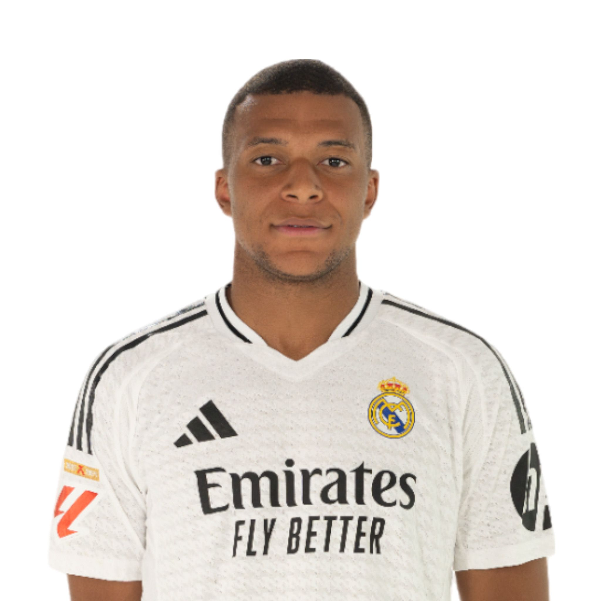
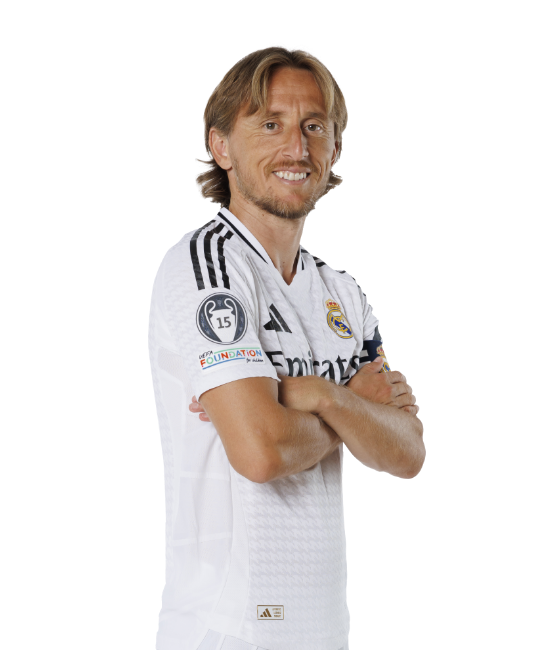

INDICE
|  | ||||
|---|---|---|---|---|
| Kylian Mbappe | Endrick | Vinicius JR | Brahim | Rodrygo |
|  | ||||||
|---|---|---|---|---|---|---|
| Jude Bellingham | Arda Guler | Luka Modric | Fede Valverde | Eduardo Camavinga | Tchouameni | Dani Ceballos |
|
|
||||||
|---|---|---|---|---|---|---|---|
| Dani Carvajal | Antonio Rudiguer | Eder Militao | Ferland Mendy | David Alaba | Jesus Vallejo | Lucas Vazquez | Fran Garcia |
| Courtuois | Lunin |
EL club actualmente no se encuentra en sus mejores, el club dirigido por Carletto Ancelotti esta causando unas malas sensaciones en su afición a pesar de consigue llevar adelante sus partidos. Este hay que sumarse a la marcha de Toni Kroos y a la gran cantidad de lesiones que tiene el equipo desde este inicio de temporada. El equipo perdio hace unas semananas el primer partido desde hace un año despues de 36 partidos sin perder, esto fue la gota que colmo el vaso para los aficionados. Los aficionados estan empezando a pitar al equipo en sus partidos en el Estadio Santiago Bernabeu debido a su mal comienzo de temporada.
El gran problema del Real Madrid y el de su entrenador es buscar una forma de poder encontrar el buen juego y las buenas sensaciones, ya que a pesar de la gran plantilla que dispone no consiguen hacer buenos partidos a pesar de que consigan la victoria. Este aspecto es el mas preocupante desde que empezo esta temporada.
A parte de su juego el club tambien culpa a la UEFA por la gran cantidad de partidos que se juega en un temporada llegando a los 70 partidos por temporada. El club se queja ya que es uno de los equipos que mas se ve afectado por esto, ya que cuenta con una gran cantidad de jugadores lesionados como el caso de kylian Mbappe o el mismo Dani Carvajal.


Estas son dos fotos que representan la temporada del Real Madrid hasta este momento con derrotas que nadie contaba con ellas o empates donde no da ninguna seguridad en defensa ni en ataque y con un medio del campo totalmente desconectado del partido.
El club esta saturado en su enfermeria, debido a todo tipo de lesiones ya que van desde una lesion como una sobrecarga muscular hasta la rotura de ligamentos cruzados.
Lesiones Muscurales
Lesiones de Rodilla
Lesiones de Tobillo
Este problema no es reciente sino que esto ya ocurrio la temporada pasada, teniendo que fichar futbolistas en el ultimo momento para poder suplir esas lesiones como en el caso de Courtois cuando se rompio el cruzado, esto obligo a fichar al portero Kepa para poder suplirlo, o tambien el caso de David Alaba que aun arrastra la lesión de la pasada temporada.
Esto se esta conviertiendo en algo habitual en el mundo del futbol no solo en el Real Madrid cantiades de clubes protestan tambien por la cantidad de partidos que hay que jugar y por el calendario. Debido a esto estan aumentando las lesiones de cruzado y sobre todo musculares, un ejemplo a nivel internacional es la lesion de cruzado de Rodri jugador del Manchester City el cual era uno de los jugadores que mas protestaba este tema, llegando incluso a proponer una huelga si esto seguia asi.
Desde el Real Madrid proponen a la UEFA que quite partidos por temporada para poder zanjar este tema y ademas añade que si hay menos partidos la gente esperara los encuentros con mas espectacion a parte de que aumenta el buen futbol debido al mayor descanso de los jugadores.
En el siguiente enlace te llevare a una pagina donde te mostrara los titulos del Real Madrid a lo largo de su historia.
Palmares del ClubEl Real Madrid es conocido como un equipo con mistica y un equipo que lucha hasta el final sin dejar de pelear hasta el pitido final del arbitro. Esto se conoce como el ADN Real Madrid, esto suele aparecer en las noches de Champions en Santiago Bernabeu cuando parece que todo esta al reves todo en contra es cuando el equipo cambia completamenta y crea una conexion aficion jugadores que siembra miedo en el rival.
Esto lleva al equipo a salvar el partido, con un empate o en la mayoria de los casos con la remontada, es un momento inexplicable ya que siempre pasa cuando el equipo esta en peor momento del partido, pero a partir del primer gol primera ocasion, con cualquier jugador en el campo sin tactica y sin idea el Madrid consigue hacer lo imposible y remontar.
Muchos llaman suerte a esto, pero despues de todas las veces que paso ya empiezan a verlo como algo normal y los entrenadores rivales empiezan a intentar frenarlo, pero casi nunca lo consiguen. Un ejemplo de esto es la decimocuarta Champions del Real Madrid donde llega a la final despues de pasar todas las eliminatorias en el Bernabeu en los ultimos minutos y a la épica.
Estas remontadas no ocurren solo en el Bernabeu sino que tambien pasan en los estadios rivales o en finales, hay muchos ejemplos de esto, uno de ellos es la remontada al Liverpool en Anfield donde el Madrid empieza perdiendo por dos y da la vuelta al partido para dejar el resultado en un 2-5, o tambien la mitica final de la decima en Lisboa contra el Atletico de Madrid con el gol de Sergio Ramos en el minuto 93 que consigue llevar el partido a la porroga para acabar ganando la ansiada decima Copa de Europa.
Tambien hay que añadir que esto no solo ocurre en Champions sino en todo tipo de competiciones como en la Copa del Rey o La Liga.
El Santiago Bernabeu es uno de los primeros estadios de todo el mundo que da el salto a los nuevas tecnologias con nuevas instalaciones, mas grandes, mejores y de mejor calidad. Estas reformas ayudan al cuidado del cesped la mejora para los aficionados en cuanto a comodidad y a facilidades para no perderse ni una jugada del partido gracias a todas las pantallas.
Lo que mas destaca de este nuevo Bernabeu la estetica desde fuera con el cambio de toda la fachada de piedra a las laminas que recubren todo el estadio alrededor dandole una imagen mas futurista y moderna al estadio, tambien se van a instalar una luces para la fachada y poder mostrar imagenes como la del escudo o imagenes de momentos importantes para el club.
Otro cambio importante es la nueva tecnologia para proteger el cesped, este consiste en que cuando acaba el partido el cesped es retractil y se guarda debajo del para poder conservarlo en el mejor estado posible. Esto tambien permite que se puedan realizar otras actividades como conciertos, otros deportes e etc, y todo esto sin que pueda afectar al cesped.
La posibilidad de cerrar el techo del campo es una de las nuevas caracteristicas del nuevo Bernabeu, esto se hace para en caso de lluvia durante el partido se cierra ese techo y no afecta al juego y lo hace mas facil, esto mismo tambien en caso de viento. Esto llevo a varias protestas ya que muchos rivales se quejaban ya que al cerrar el estadio el sonido de aficion era mucho mas fuerte que si fuera abierto y podia molestar a los jugadores.
Las pantallas de 360º dan una imagen del estadio mucho mas grande y mucho mas moderno, ademas de que ayuda mucho a los aficionados a no perdese ni una jugada del partido ya que va poder ver la repetición en la mejor calidad posible.
Esta reforma tuvo un coste enorme para el club, pero sus costes van a ser recuperados rapidamente ya que este nuevo estadio da la posibilidad de hacer conciertos, deportes o eventos que generan ingresos para el club, como por ejemplo el evento de Ibai. los conciertos de Duki, Karol G o otros muchos cantantes.
Este nuevo estadio y todas sus mejoras tambien suponen un problema y protestas. Estas protestas vienen de los vecinos del estadio, estos se quejan de el ruido que tienen que soportar los dias de partido o en los conciertos quejandose de que no pueden dormir como le paso en los tres dias de concierto de Karol G, el Madrid esta intentando mejorar esta insonorización pero mientras tanto esta llevando a cabo soluciones como no poner musica por los altavoces durante los descansos del partido y aplazando muchos conciertos hasta mejorar este aspecto.
 |
 |
|---|---|
| Aspecto Antiguo del Santiago Bernabeu | Interior del estadio antiguo |
 |
 |
|---|---|
| Estadio reformado por fuera | Interior del estadio nuevo |
 |
 |
|---|---|
| Festival RBF | Concierto de Duki |
Si quieres estar informado en directo de todo lo que ocurre en el Real Madrid, clica encima de la imagen y te llevara al canal de televisión oficial del Real Madrid donde veras imagenes exclusivas.